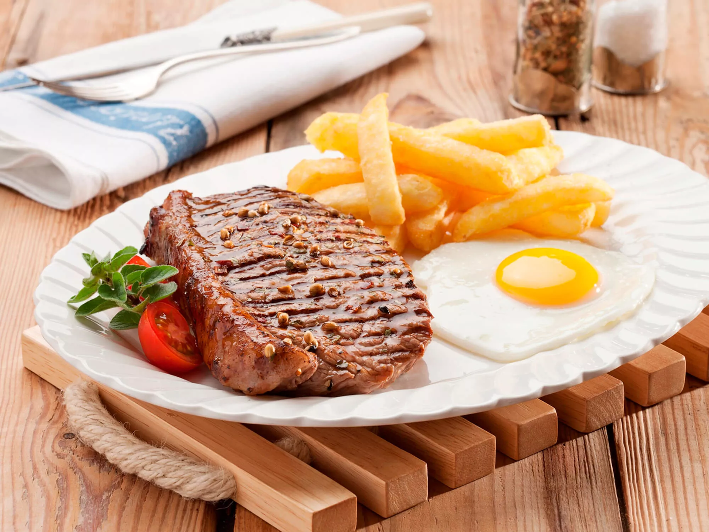

Steak, Eggs, and Chips

Description
A true English staple dish.
Simple yet deliciously meaty!
Ingredients
- 1 Rump or Sirloin Steak
- 200g of frozen Chips
- 2 large Eggs
- Salt & Pepper
- Steak Seasoning
- Mixed Herbs
Steps
- Preheat air-fryer to 170c for 3 minutes.
- Once preheated, place the frozen chips into the air fryer and cook for 20 minutes.
- When the chips reach 10 minutes left, shake thoroughly in the air fryer drawer.
- After shaking, start preheating the frying pan and grill to a high heat.
- Crack the 2 eggs into the pan and cook, leaving them slightly runny.
- Then place the steak onto the grill and cook to how you like it. (I would recommend medium-rare.)
- Serve on a plate and garnish as needed.